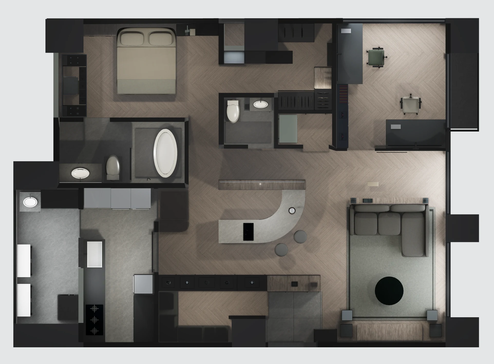

SV02 · 2026/11/07 全室複核 · 幾何基準 SV01
整間格局，哪些已符合放樣尺寸？
主要房間及主要定位尺寸符合 1103 圖；仍有未核定的局部，不能視為全室施工尺寸已全部確認。
核對來源為業主提供的《泰山凰邸平面圖1103－放樣》P-03，圖面日期 2026/11/03。本次直接量測六版完成載入後的 3D 牆面，並核對原圖標註及向量牆線；不是從舊模型配方或 AI 圖片讀數。
逐區結果
以下單位皆為公分。主要矩形段、定位尺寸鏈、局部內淨與櫃體尺寸不能混用；尺寸符合不代表家具與機電已完成施工核定。
| 空間 | 目前模型 | 判定 | 量測基準／限制 |
|---|---|---|---|
| 主臥 | 480 × 280 | 符合主要段標註 | 北牆內面至主浴牆；柱體凹入區另計，非完整可用面積。 |
| 主浴 | 375 × 183 | 符合標註 | 以四周內牆面量測；西側開口高度沒有新標註。 |
| 客浴 | 150 × 141 | 符合標註 | 不是舊管位圖的 155 × 145 結構範圍。 |
| 電腦房 | 328 × 374 | 符合標註定位 | 南側玻璃隔間屬設計配置，設在圖示 374 分界。 |
| 廚房 | 212 × 462 | 符合標註鏈 | 東側廚具移位後，兩排檯面前緣名義距離為 85.5。 |
| 更衣室／臥室走道 | 340 定位鏈／324 扣牆寬 | 標註鏈符合；局部推估 | 空間不規則；柱、管道、衣櫃須分別扣除，324 不是全區可用寬。 |
| 儲藏室 | 162 × 93 | 牆線推估值 | 原圖未直接標註這兩數字；依相鄰尺寸鏈與向量牆線對位。 |
| 客廳 | 581 定位深／573 扣玻璃深 | 標註鏈符合 | 581 從書房分界量至南牆；573 從 8 cm 設計玻璃隔間南面起算。 |
| 中島區 | 位於公共區尺寸鏈內 | 配置為設計值 | 中島、雙面櫃、桌椅並未標於這張原始放樣圖，各版本保持自身配置。 |
| 玄關 | 柱寬 102／門區 156 | 標註符合；右牆待核 | 右牆模型 383，圖標 384；尺寸鏈端點有約 1 cm 差異。 |
| 收藏室／V0 貓房 | 位於公共區尺寸鏈內 | 配置為設計值 | 收藏室隔間、弧牆及櫃體屬各方案設計，不能稱為原圖實測。 |
| 後陽台 | 模型內寬約 183.4 | 尚未完全對齊／待核 | PDF 牆線推估約 177.3，模型約寬 6.2；原圖未標寬，未擅自更改；外側樓板與欄杆細部仍有未標尺寸。 |
全室定位尺寸鏈
- 圖面上側：480 ＋ 340 ＋ 12（隔牆）＋ 328 ＝ 1160，六版一致。
- 圖面右側：374 ＋ 581 ＝ 955，六版一致；這是定位鏈，不是兩個扣完裝修的淨深。
- 圖面下側：廚房 212、牆厚模型 13、間距 219、柱寬 102、門區 156；最右牆模型 383、圖標 384，保留約 1 cm 端點疑點。
仍要確認的地方
- 玄關右牆：383／384 的端點差異，需由設計師確認尺寸鏈基準。
- 後陽台：沒有寬度標註；牆線推估與目前模型有約 6.2 cm 差異。保留為待核，沒有把推估當成現場確定尺寸。
- 主浴西側開口：圖有開啟弧線，但未標註高、窗台及門窗型式。目前沿用窗台 90、開口高 140 的舊模型設定，不能說已依 1103 核定。
- 更衣室凹槽、管道、牆厚與未標洞寬：依圖面牆線推估；沒有獨立尺寸的部分仍需現場或詳圖核定。
- 櫃體、中島、收藏室隔間與裝修天花：屬方案設計。CH309／310 是樓板高，裝修天花 275／廚房 240 仍是設計值。
目前模型的實際平面

這次同步修正
六版平面圖的房間點選範圍改用校正後的主臥、兩浴、電腦房、廚房與儲藏室邊界；原本範圍還沿用舊座標。新增固定的 SV02 核對入口，切換燈光也能辨識版本。歷史客變原圖不再疊上現行房間點選範圍。
本次沒有擅改未標尺寸的牆體或設備。六版 3D 主體保持 SV01；既有 AI、舊 Cycles 圖與舊客變原圖不代表這份放樣尺寸。量測紀錄留存本機「調整紀錄／20261107全室放樣複核SV02」。